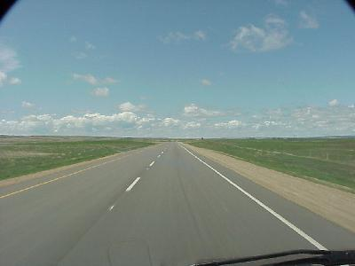

May 19, 1759 miles
| We started the day a little later, pulling out of camp at about 7:50. Since it was still a little wet yet this morning we took our showers packed up and left, stopping at a restaurant just down the road a little. | |
| Today we drove, and drove, and drove through the plains of south-central Canada. This is big country with not much excitement, but the people are nice and the scenery beautiful, but it can be summarized in just a few views -- big country - flat, big country - rolling, and grain elevators surrounded by little towns. |  |
| And, did I tell you we drove, and drove, and drove? | |
| We pulled into camp, just outside Calgary,
at about 8:00 PM, after traveling 652 miles - that was a
long day, with lots of driving. Wildlife for the day included: deer (3), coyotes (2), prairie dogs (too many), and antelope (3). |
|